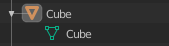
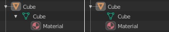

编辑
这些偏好设置用于控制相关工具与用户之间的交互方式。
物体
新建物体
- 关联材质到
要正确理解此选项，您需要了解 Blender 如何使用物体。Blender 中的几乎所有内容都组织在数据块的层次结构中。数据块可以被认为是某些信息的容器。例如，物体数据块包含有关物体的位置、旋转和缩放的信息，而关联的链接物体数据块包含有关网格的信息。
 网格示例。
有两种关联材质的方式：
- 物体数据
任何创建的材质都将创建为物体数据数据块的一部分。
- 物体
任何创建的材质都将创建为物体数据块的一部分。
 关联到物体数据（左）和关联到物体（右）的材质。
See also
- 对齐到
- 世界环境
新建的物体对齐到世界坐标。
- 视图
新建的物体对齐到视图坐标。
- 3D 游标
新建的物体对齐到3D游标。
- 进入编辑模式
勾选该项，新建物体后自动进入编辑模式。
- 实例空物体大小
当创建一个新集合实例时，空物体的显示大小。
复制数据
The Duplicate Data checkboxes define what data is copied with a duplicated object and what data remains linked. Any boxes that are checked will have their data copied along with the duplication of the object. Any boxes that are not checked will instead have their data linked from the source object that was duplicated.
比如，如果勾选 网格，当复制物体时，会随新物体创建网格数据的副本，而且每个副本的网格都是独立的。如取消勾选，当修改其中一个物体的网格时，其余副本也会随之被修改。
The same rules apply to each of the checkboxes in the Duplicate Data list.
3D 游标
- 游标表面投射
通过单击放置游标时，游标将投射到游标下的表面上。
- 游标锁定调整
当视图锁定到游标时，移动游标可以避免基于新偏移的视图 跳转。
标注
- 默认颜色
新标注层的默认颜色。
- 擦除半径
与标注工具一起使用的橡皮擦的尺寸。
See also
权重绘制
网格表面权重 是用于控制骨骼使角色网格形变的程度。为了可视化和绘制这些权重，Blender 使用颜色渐变（从蓝到绿，以及从黄到红）。勾选该选项，可以在下方的空白渐变控件中自定义权重-颜色映射。更多信息参见颜色渐变页面。
蜡笔
- 距离
- 曼哈顿点距
鼠标在运动被记录下来之前在上下方向需移动的最小像素值。调低该值可方便绘制曲线。
- 欧几里德
记录移动前鼠标必须移动的最小距离。
See also
文本编辑器
- 自动关闭字符对
键入引号、括号、大括号或小括号等字符时，自动插入相应的字符以关闭表达式。
杂项
- 雕刻叠加颜色
定义在雕刻模式下要在笔刷圆圈的内部使用的颜色，并将其作为笔刷的叠加层放置，表示笔刷影响的焦点。只有在选择了叠加可见性时才能看到叠加颜色（点击 眼睛 以设置其可见性），叠加层的透明度由位于侧栏的 的 alpha 滑块控制。
- 节点自动偏移间距
用于偏移节点的间距。